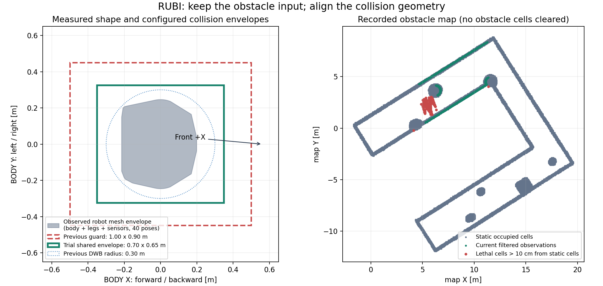

2026-10-20 · 실제 입력 기록 + Gazebo 메시/관절 TF 분석 + 격리 ROS 통합 시험
Livox Driver / Simulator
└─ 원시 PointCloud2 ──────────────── Localization / Height Mapping 입력
└─ obstacle_cloud (navigation 전처리)
├─ 전방 ±60°: 센서 원점 거리 ≥ 0.3m
├─ 그 밖의 방향: 거리 ≥ 0.6m
├─ 최대 거리: 5m
└─ 몸체 기준 Z: -0.35 ~ +1.5m
├─ /legged/obstacles → local/global costmap → DWB
└─ /legged/collision_points → Collision Monitor
DWB → /legged/cmd_raw → Collision Monitor → /legged/cmd_safe
→ command_watchdog의 final guard → /cmd_vel
필터는 Livox Driver 내부가 아니라 legged_navigation/obstacle_cloud다.
두 출력은 같은 점 집합이며, 장애물 지도용은 센서 좌표와 원래 시각을 보존하고
근접 감시용은 XYZ를 base_link로 변환한다. 거리와 높이 판정에는 고정 장착 TF만 사용한다.
관절 TF는 이번 오프라인 치수 분석에만 사용했으며 실행 의존성으로 추가하지 않았다.
40개 점군 snapshot의 필터 출력 209,267개가 Gazebo의 정적 형상 표면과 4cm 이내로 일치했다. 센서에서 1m 이내인 22,200개는 모두 실제 아래쪽 벽과 일치했다. 이번 기록에서는 바닥 또는 발 반사 증거가 없었다. 모든 보행 구간에 자가 반사가 없다는 의미는 아니다.
점군을 해당 시각의 map TF로 변환하면 정적 occupancy 장애물 셀 중심과의 거리는 대략 중앙값 2cm, 95백분위 3cm였다. 이번 기록에서 큰 현재 정합 오류는 확인되지 않았다. 초기 GT/LIO 상대 정렬 이후 약 6cm·0.93° 이내의 상대 변화가 관측됐다.
반면 마지막 global costmap에는 정적 지도 장애물에서 10cm 넘게 떨어진 lethal 셀이 154개 있었다. 현재 관측과 별개인 누적 흔적이 존재하지만 그 점이 언제, 어떤 원인으로 쌓였는지는 이번 구간으로 확정할 수 없다. 물체 추가, 과거 자세/시간 오차, 자가 반사 등을 구분하려면 생성 시점 기록이 필요하다. 임의로 장애물 셀을 삭제하지 않았다.

| 항목 | 앞뒤 X | 좌우 Y |
|---|---|---|
| 관측 메시 투영 범위 | -0.2145 ~ +0.1990m | -0.2462 ~ +0.2460m |
| 이전 final guard | 1.00m | 0.90m |
| 새 공통 시험 외곽 | 0.70m | 0.65m |
| 관측 외곽 대비 최소 여유 | 약 13.5cm | 약 7.9cm |
몸체, 좌우 다리, LiDAR와 현재 전면 카메라 메시를 포함해 기록된 40개 자세를 겹쳐 계산했다. 자세별 메시를 base_link와 같은 BODY 좌표계에 투영했다. 최대 보폭, 옆걸음, 큰 roll/pitch, 실제 장착물까지 검증한 범위는 아니다. 하드웨어 배포 치수는 별도 보행 외곽 측정으로 확정해야 한다.
collision.yaml / Stop.points가 형상 설정의 단일 출처다.
launch가 local/global costmap footprint와 최종 guard에 같은 형상을 전달한다.
DWB의 BaseObstacle를 ObstacleFootprint로 바꿨다.
여유가 사각형에 이미 포함되어 있으므로 costmap 추가 padding은 0이다.
형상은 같지만 판정 알고리즘은 다르다. DWB는 local costmap에서 2초 후보 궤적의 사각형 외곽을 검사한다. final guard는 global costmap에서 1초 일정 Twist 궤적의 채워진 사각형과 격자 교차를 검사한다. 지도 차이와 표본 간 보수적 여유 때문에 최종 guard가 추가로 멈출 수 있다. Global planner clearance 0.45m도 유지했다.
공식 코드: Humble ObstacleFootprint. 필터의 센서 사각지대나 localization 오차는 이 치수 변경으로 해결되지 않는다.
빌드 성공, Python 회귀 테스트 36개 통과. ROS_DOMAIN_ID=174의 합성 입력으로 실제 launch를 실행해 네 단계 형상 일치, DWB 속도 명령 생성, 장애물 삽입 후 우회 경로, 근접 장애물 정지와 센서 중단 정지를 확인했다. 기존 Gazebo 도메인에 목표나 속도 명령을 보내지 않았다. 실제 좁은 통로 통과 주행은 새 설정으로 아직 검증하지 않았다.
기존 navigation 터미널에서 Ctrl+C 후 아래 명령으로 재시작한다. Gazebo와 localization은 유지한다. 재시작하면 동적 costmap 누적은 새로 시작하며 저장한 occupancy/height map 파일은 변경하지 않는다. 이미 종료된 목표는 다시 지정한다.
source /home/kim/legged_robot_ws/install/setup.bash ros2 launch legged_bringup navigate.launch.py \ site:=/home/kim/legged_robot_ws/maps/sim_site_v1/site.yaml \ use_sim_time:=true \ cloud_topic:=/livox/lidar_PointCloud2 \ odom_topic:=/Odometry \ mode:=nav2 controller:=dwb rviz:=true
근거: 메시 외곽 · world 표면 일치 · 지도 정렬 · 누적 지도 셀 · 회귀 테스트 · 격리 ROS 통합 시험 · 변경 전 백업